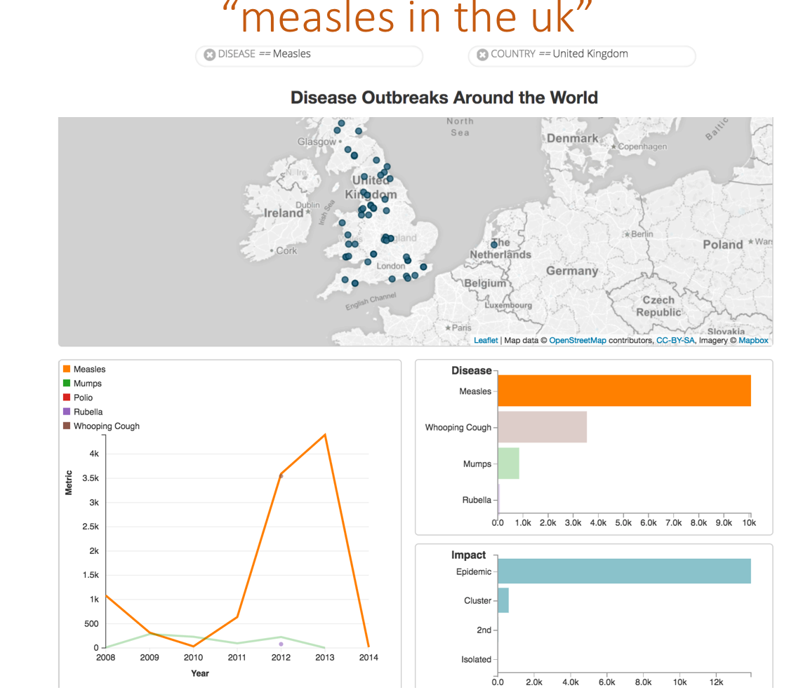

Visual Text Analytics for Asynchronous Online Conversations

Since the rise of social-media, an ever-increasing amount of conversations are generated. Often many people contribute to the discussion, which become very long with hundreds of comments, making it difficult for users to get insights about the discussion. My PhD dissertation integrates language processing and visualization techniques to support the user’s task of exploring and analyzing conversations. Language processing mines topics and opinions from the conversations, while visualization techniques provide visual overviews of the mined data and support user exploration and analysis. User studies revealed significant improvements, when our systems were compared to traditional blog interfaces. This dissertation also introduces a new human-in-the-loop algorithm that helps the user to revise results of topic modeling. Two user studies show that these systems outperform their non-interactive counterparts. Finally, we tailored our previous systems to support information seeking in community question answering forums. The prototype was successfully evaluated through a large-scale user study.
Publications: IUI 16, TIIS 16 IUI 15, EuroVis 14
Applying Pragmatics Principles for Interaction with Visual Analytics

Interactive visual data analysis is most productive when users can focus on answering the questions they have about their data, rather than focusing on how to operate the interface to the analysis tool. One viable approach to engaging users in interactive conversations with their data is a natural language interface to visualizations. These interfaces have the potential to be both more expressive and more accessible than other interaction paradigms. We explore how principles from language pragmatics can be applied to the flow of visual analytical conversations, using natural language as an input modality. We evaluate the effectiveness of pragmatics support in our system Evizeon, and present design considerations for conversation interfaces to visual analytics tools.
Publications: IEEE TVCG (Proc. VAST) 2017
User-Adaptive Information Visualization

There is increasing evidence that user characteristics can have a significant impact on visualization effectiveness, suggesting that visualizations could be designed to better fit each user’s specific needs. Most studies to date, however, have looked at static visualizations. Studies considering interactive visualizations have only looked at a limited number of user characteristics, and consider either low-level tasks (e.g., value retrieval), or high-level tasks (in particular: discovery), but not both. This paper contributes to this line of work by looking at the impact of a large set of user characteristics on user performance with interactive visualizations, for both low and high-level tasks. We focus on interactive visualizations that support decision-making, exemplified by a visualization known as Value Charts. We include in the study two versions of ValueCharts that differ in layout, to ascertain whether layout mediates the impact of individual differences and could be considered as a form of personalization. Our key findings are that (i) performance with low and high-level tasks is affected by different user characteristics (ii) users with low visual working memory perform better with a horizontal layout. We discuss how these findings can inform the provision of personalized support to visualization processing.